En desarrollo
La red profesional de las familias de tu colegio
B2School conecta profesionalmente a las familias de un mismo colegio —y de colegios cercanos— para generar oportunidades reales de colaboración, negocio y networking en un entorno de confianza.
B2School está en desarrollo. La demo funciona en el navegador con datos inventados: el colegio, las familias y las empresas no son reales.
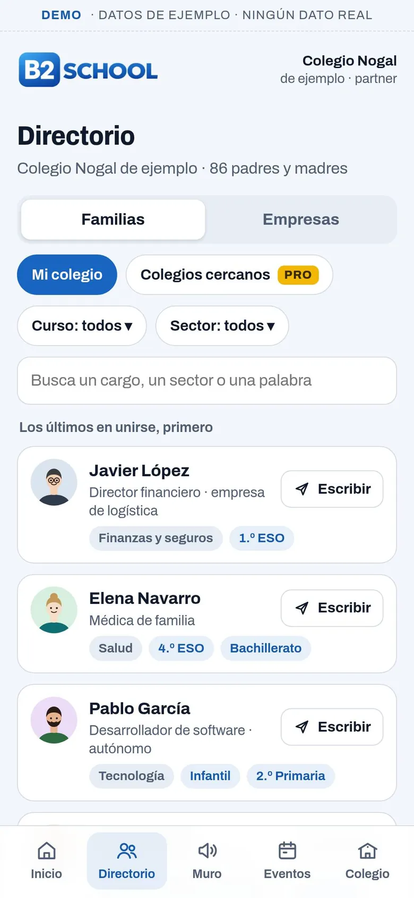
Qué es
B2School no sustituye a LinkedIn: lo ordena por colegio
Los colegios concentran un capital profesional enorme —emprendedores, directivos, especialistas, autónomos, técnicos, creativos…— que hoy permanece invisible.
B2School nace para activar ese capital: lo organiza por comunidades escolares y facilita conexiones útiles sin fricción, sin crear otra red social más y respetando la privacidad.
B2School añade el contexto escolar
- Tu colegio
- El curso de tus hijos
- En qué puedes ayudar
Entras con tu cuenta de LinkedIn: no creas un perfil desde cero.
El problema
El vínculo profesional entre familias no tiene su sitio
- En los colegios se generan vínculos sociales constantes, pero no existe un espacio estructurado para el vínculo profesional entre familias.
- Los padres desconocen a qué se dedican otros padres del mismo centro.
- Se pierden oportunidades: colaboraciones profesionales, clientes y proveedores de confianza, mentoría y apoyo entre familias.
- Crear una red profesional desde cero genera fricción: perfiles nuevos, datos, tiempo.
Lo que ofrece
Para las familias, los colegios y las empresas
Para las familias
- Conocer fácilmente a qué se dedican otros padres y madres del colegio.
- Conectar profesionalmente desde un entorno cercano y de confianza.
- Encontrar clientes, proveedores, socios o colaboradores sin salir de su comunidad.
- Acceder a eventos de networking hiperlocales.
Para los colegios
- Fortalecer el sentimiento de comunidad.
- Ofrecer un valor añadido real a las familias.
- Activar el talento interno del centro.
- Diferenciarse frente a otros colegios.
- Generar espacios de colaboración profesional y educativa.
Para las empresas
- Acceder a comunidades cualificadas, segmentadas y de confianza.
- Visibilidad hiperlocal real, no publicidad masiva.
- Participar en eventos y acciones de valor.
Cómo funciona
En cinco pasos
Así se ve en la demo, con un colegio y unas familias inventados.
-
Entras con tu cuenta de LinkedIn
Tu nombre, tu foto y tu email llegan de LinkedIn: no creas un perfil desde cero. A qué te dedicas y el enlace a tu perfil los añades tú.
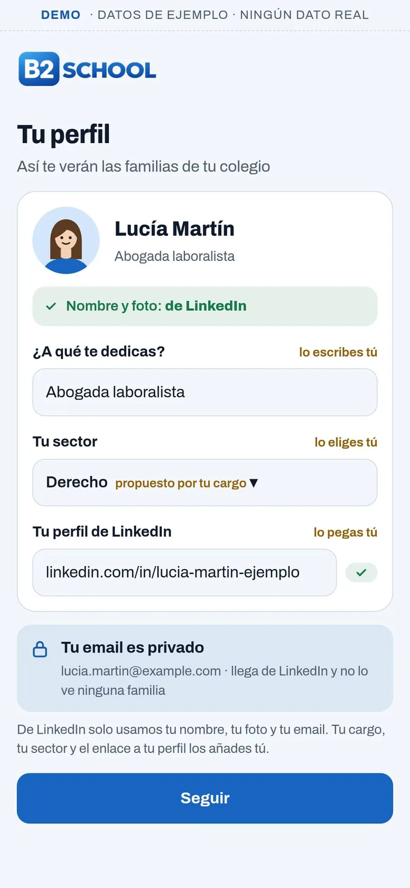
-
Eliges tu colegio
Tu colegio, el curso de tus hijos y en qué puedes ayudar a otras familias.
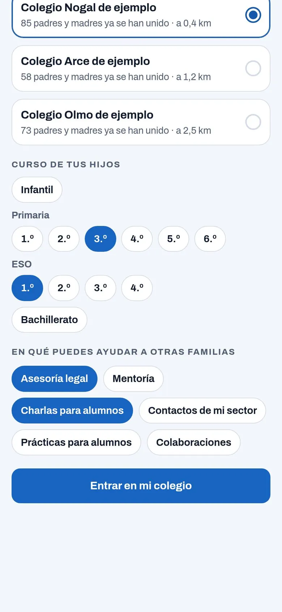
-
Ves a qué se dedican las familias
En el directorio de tu colegio, cada padre o madre con su profesión y su sector. Filtras por curso, por sector o por una palabra.
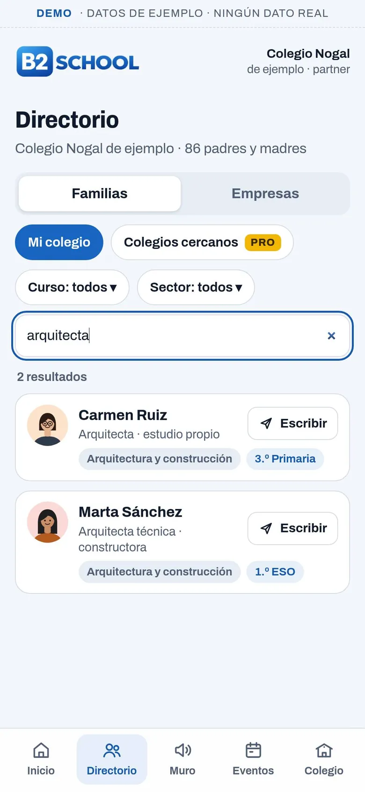
-
Le escribes con un mensaje preparado
Con un toque, B2School te prepara el mensaje —«Somos del mismo cole…»— para enviárselo por LinkedIn.
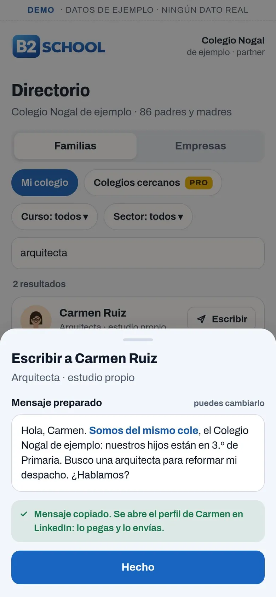
-
Publicas en el muro de oportunidades
«Busco proveedor», «Ofrezco servicios», «Busco socio», «Proyecto en marcha», «Mentoría / colaboración»: cada publicación va unida a tu perfil profesional.
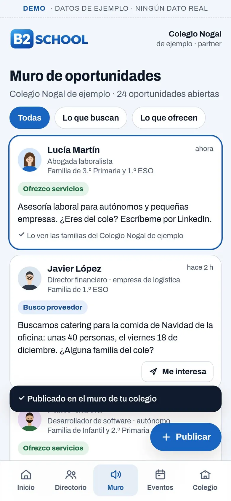
Capturas de la demo, con datos inventados.
Perfiles
Cuatro perfiles
Un modelo progresivo, que activa la monetización solo cuando hay valor y uso real.
Usuario Free
- Acceso a su colegio.
- Ver el directorio y las oportunidades.
- Conectar a través de LinkedIn.
Usuario Pro
- Acceso a colegios cercanos.
- Más visibilidad.
- Más publicaciones.
- Acceso preferente a eventos.
Empresa
- Página de empresa: qué hace, sus servicios y en qué colegios trabaja.
- Publicidad segmentada, discreta y siempre identificada.
- Participación en eventos.
Colegio Partner
- Portal propio, con su logo y sus colores.
- Cifras de conjunto de su comunidad.
- Eventos y dinamización.
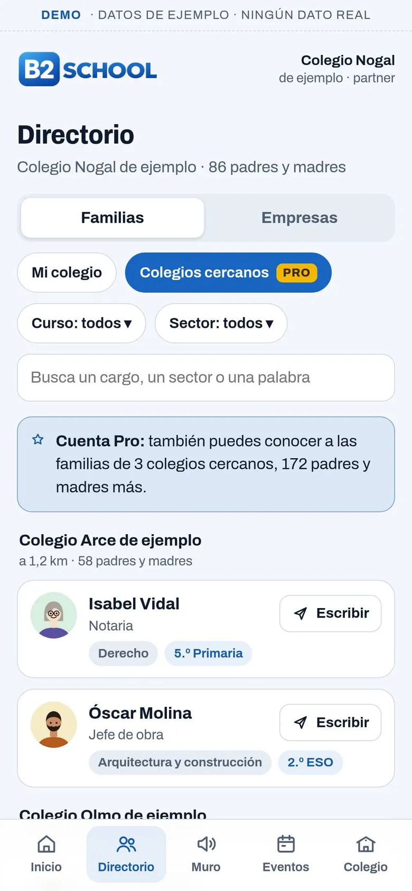
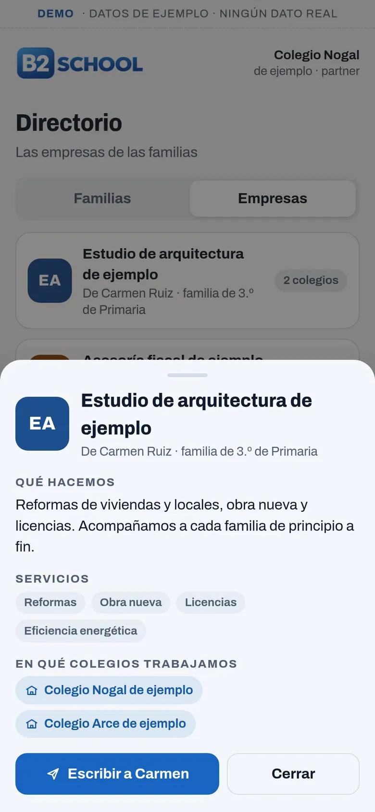
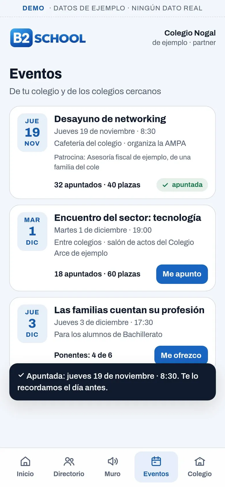
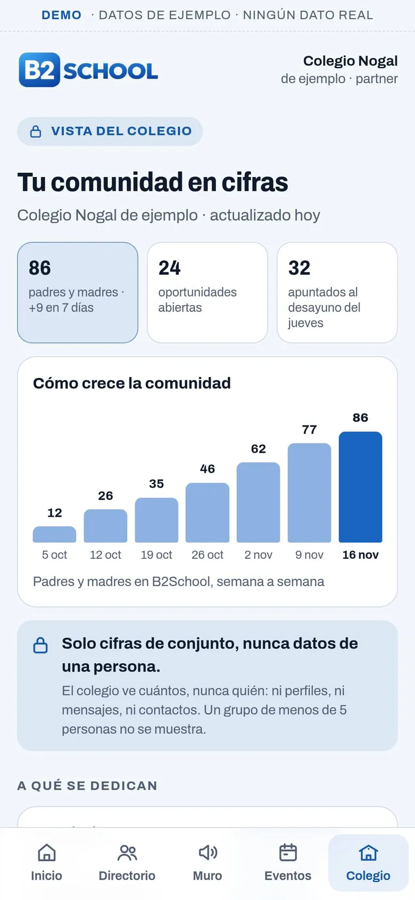
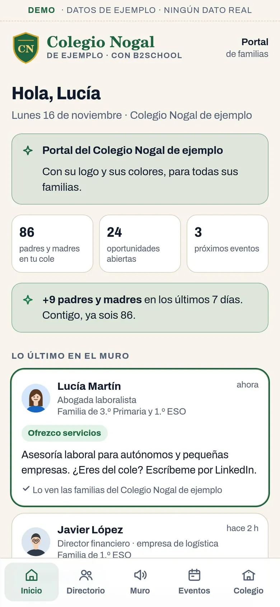
Capturas de la demo, con datos inventados.
Filosofía
Tres principios
- 1Confianza antes que volumen
- 2Valor antes que monetización
- 3Comunidad antes que publicidad
B2School no busca ser una red social masiva, sino una infraestructura profesional hiperlocal basada en colegios.
Vídeo
Mira cómo funciona
Vídeo de la demo, con datos inventados · plataforma en desarrollo · voz generada con IA.
Prueba la demo
Pruébala en tu móvil
La demo de B2School funciona en el navegador, mejor en el móvil. Todo lo que ves es inventado: el colegio, las familias, las empresas y los eventos.
No se conecta a LinkedIn ni envía nada: lo que escribas no sale de tu navegador.
Es una demostración: B2School está en desarrollo.
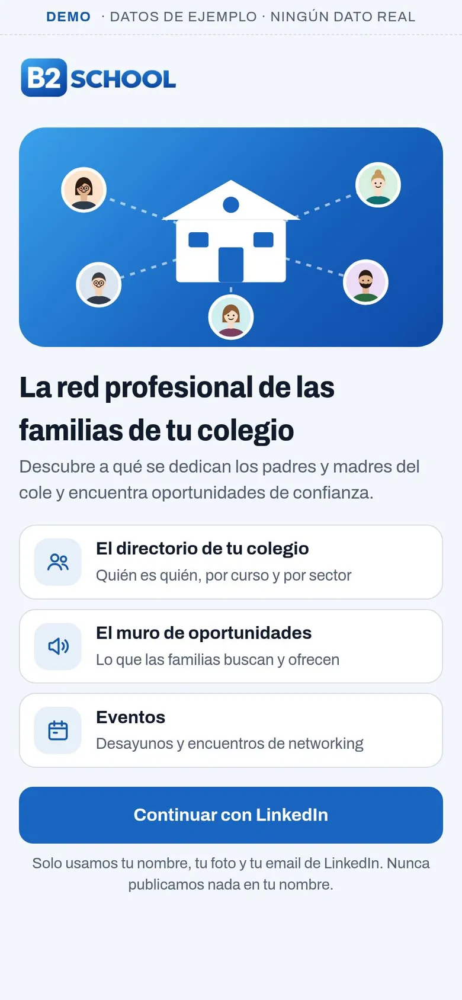